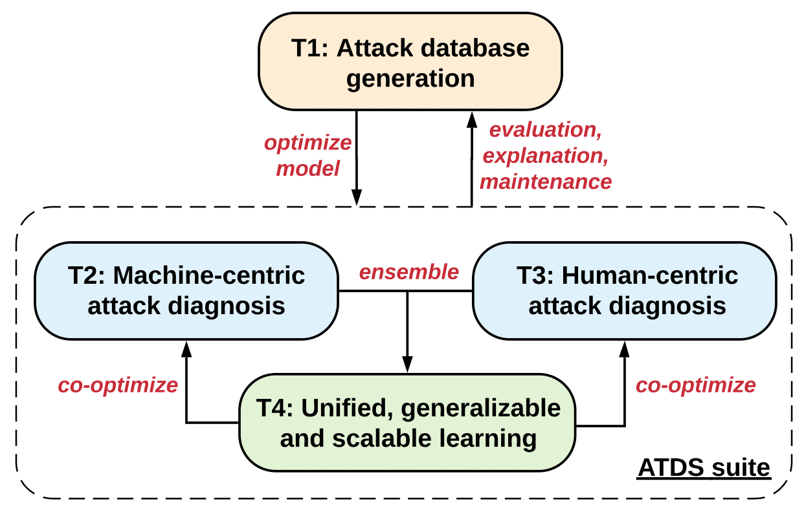

Research ProjectsMy research thrusts include optimization and leanring fundations of trustworthy and scalable ML/DL with their applications to signal processing, computer vision, natural language processing, computer programs, hardware design, and biology. Intelligent Diagnosis for Machine and Human-Centric Adversaries(Funded by DARPA, 10/2020 - )  This project aims to build a generalizable and scalable learning system for reverse engineering of deception (RED), which can automatically recover and index attack toolchain signatures in both machine-centric and human-centric attack scenarios, with targets to fool machine learning (ML) decisions and human decisions, respectively. Existing works have studied on detecting and defending these information deception attacks. To our knowledge, however, little work sought to formalize a RED technique either in adversarial ML or in media manipulation. With the innovation in this project, we believe that it can make a significant impact on defending and diagnosing attacks in high-stakes applications such as object detection, face recognition, and image reconstruction. Also, their generalizability and scalability enable the potential to be integrated with other machine intelligence-based systems. |